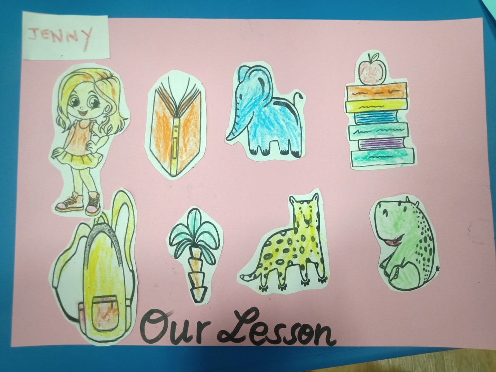

Vì sao cần dạy nghe tiếng Anh cho bé 4 tuổi trước những kỹ năng khác?
4 tuổi là thời điểm lý tưởng nhất để bé bắt đầu ngoại ngữ. Thế nhưng, không phải kỹ năng nào cũng phù hợp để dạy ở độ tuổi này.
Trong quá trình phát triển và tiếp thu ngôn ngữ tự nhiên, các kỹ năng ngôn ngữ sẽ được định hình theo trình tự Nghe – Nói – Đọc – Viết. Nghe chính là kỹ năng đầu tiên được phát triển trong quá trình hình thành một hệ ngôn ngữ.
Khác với người lớn, trẻ em ngay từ bước đầu đã có khả năng tiếp thu kiến thức và hình thành kỹ năng nghe ngoại ngữ cực tốt. Bé có thính giác nhanh nhạy, dễ dàng nắm bắt âm thanh và mô phỏng lại một cách hoàn hảo.
Trong độ tuổi từ 4 – 6, bé cũng chưa đủ khả năng để học những kỹ năng như viết hoặc cần nhiều quy tắc như đọc. Mặt khác, kỹ năng nói sẽ có liên hệ mật thiết đến với nghe. Chính xác hơn là bé cần phải nghe được thì mới có thể nói tốt.
Vì vậy, việc phát triển kỹ năng nghe là điều cần thiết và hợp lý cho bé 4 tuổi. Phụ huynh nên tận dụng tốt lợi thế của bé để luyện nghe tiếng Anh cho bé 4 tuổi sao cho hiệu quả nhất.
Các “mẹo” học nghe giúp bé bứt phá kỹ năng
- Để giúp các bậc phụ huynh luyện nghe tiếng Anh cho bé 4 tuổi dễ dàng hơn, dưới đây là các mẹo ‘’tưởng lạ mà quen’’ bố mẹ có thể áp dụng.
- Để bé thoải mái vui chơi
- “Thực chiến” tại môi trường giao tiếp quốc tế
- Giao tiếp tiếng Anh mỗi ngày
- Thường xuyên xem các chương trình, video tiếng Anh
- Không kiểm tra – Không điểm số
Khơi mở hành trình Anh ngữ – Bé vững bước đến tương lai
SmartKids đặt trọng tâm vào phát triển Anh ngữ một cách tự nhiên. Nên trong quá trình luyện nghe tiếng Anh cho bé 4 tuổi, khóa học sẽ kết hợp song hành cả trau dồi kỹ năng nói và tăng phản xạ giao tiếp cho bé.
Phương pháp dạy thông qua khám phá (Discovery-based Learning) sẽ giúp bé tiếp cận bài học dễ hơn thông qua: Đặt câu hỏi – Khám phá – Sáng tạo – Ôn luyện.
SmartKids giúp bé làm chủ Anh ngữ, định hình tính cách và trau dồi những giá trị lành mạnh.
